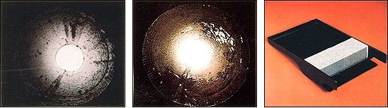
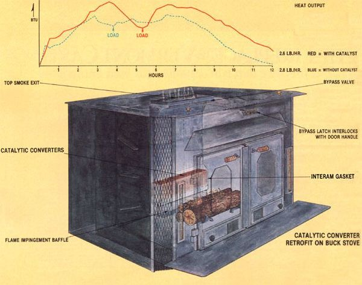
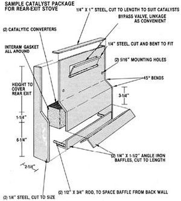
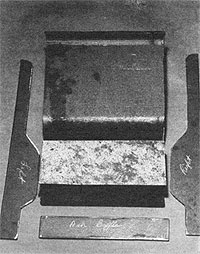

Here's a new way to get more heat, and less creosote and pollution, from your woodstove . . .
Wood heating, for all the satisfaction it brings, involves a lot of hard work . . . and anything that could trim the burden of cutting, splitting, and hauling fuel - or reduce the frequency of chimney cleanings - would be more than welcome to just about any stove owner. Of course, most veteran woodburners take pains to see that the wood they cut gets well used . . . and as a consequence many such folks have toyed with devices that claim to either increase heat transfer efficiency or reduce creosote formation. Unfortunately, as many of those experimenters have found out, heat exchangers generally speed up the accumulation of creosote deposits . . . and most add-to-the-fire chemicals don't seem to help much in removing this messy (and dangerous) substance. (See "Testing Chemical Chimney Cleaners", on page 118 of MOTHER NO. 71, for more information on that subject.)
Of course, over the past few years woodstove manufacturers have devoted a great deal of research effort to improving the performance of their products . . . in the hope of increasing overall heating efficiency, reducing creosote deposits, and limiting the load of pollutants that woodburners release into the atmosphere. We've chronicled that research (in MOTHER NOS. 67, 72, and 77) and have waited anxiously for breakthroughs.
Well, we're glad to say that the latest secondary-combustion stoves do seem to fill the bill, and many of us have eyed them longingly . . . wishing that we could justify replacing our old metal boxes with state-ofthe-art (perhaps catalytic-converter-equipped) heaters. Unfortunately, as attractive as those alternatives are, their price tags are usually pretty danged formidable.
Consequently - after suffering through a heating season of wishful frustration - MOTHER's staff members began conducting some experiments of their own in April of 1982. The goal was to develop a catalytic converter package that could be added to any of the majority of existing woodstove types . . . so that efficient, clean burning could be made available to the wood-heating public at an affordable price.
And if you read about the stack temperature thermostat (which was featured on page 41 of issue 77), you already know that members of our staff had been - for some time - working on woodburning-related projects with independent researcher B.V. Alvarez. The catalyst project was once again headed by B.V. and was, in fact, in progress when we reported on the thermostat. Since that issue went to press, B.V. has accepted a position directing engineering at Buck Stove Corporation, and the final prototype was developed and tested in cooperation with that company. By the time you read this, Buck will be well on its way to introducing a retrofit package (patent pending), similar to the one shown here, for its line of products.
Collectively, Alvarez and MOM's staffers spent thousands of hours - many of them during the hot, humid days of summer - cuddled up with the stove that Buck provided for testing . . . in a non-air-conditioned room at MOTHER'S research center. We won't be labor the amount of effort that has gone into this article (much of which, of course, also went into the development of Buck Stove's new product) or take the space to try to thank everyone on the outside who's helped out. Perhaps it's enough to say that all of the parties involved had - and have - a commitment to see that this technology gets to the public . . . that is, to you .
A HOT SUBJECT
As you may know, the goal of most woodheat development is to achieve more complete combustion, which can lead to increased heat output and less creosote buildup. And one of the major obstacles to accomplishing that goal is the very nature of wood itself. A pile of logs in a stove will always burn unevenly . . . thus, there are almost always areas in the firebox that are left to smolder. (A heavily draft-restricted fire, of course, is almost entirely in that dirty, smoldering state.)
Now some of the recently released state-of-the-art heaters can achieve excellent combustion efficiency without resorting to catalytic converters, but without exception these units are carefully designed from the legs up. So for those of us who already have woodburning heaters, a retrofit catalyst is - for now - the only way to significantly improve combustion efficiency.
Chemically, a catalyst is a substance that will facilitate a chemical reaction without being changed by it. Ceramic honeycombs coated with platinum and/or palladium and/or rhodium have filled this role in cleaning up automobile exhaust emissions since the early 1970's. The devices allow carbon monoxide, hydrocarbons, and carbon particles that have slipped past an engine's combustion chambers to be afterburned at a temperature lower than their usual ignition point.
And in the late 1970's, engineers at Corning Glass Works (then a major producer of ceramic monoliths - a trade term used to describe the honeycomb structure - for cars) recognized that the emissions from woodstoves were similar, in many ways, to those from autos. By building a honeycomb with more open space (to avoid draft restriction and allow easy passage of heavy particles), they were able to develop a "tailpipe scrubber" for woodburners.
A catalytic converter can reduce the ignition temperature of carbon monoxide and hydrocarbons from upward of 1300°F to the 500-700°F range. So, once the smoke passing through the catalyst reaches that threshold, it will oxidize . . . as long as the combustibles in it are well mixed with a sufficient supply of air. After it's "lit", the converter will produce enough heat to maintain ignition, even though the temperature of the incoming "wood gas" may drop slightly below 500°F.
As a result, a properly functioning catalytic converter can boost woodstove combustion efficiency to over the 90% mark, since most of the burnables that slip past the fire zone will be ignited in the converter. Thus, the amount of material available to stick to stovepipe walls will be less (and pollution will be reduced). Furthermore, if the energy that's converted as the smoke is burned in the ceramic monolith can be extracted , there will be more heat released into the room.
That bit of background should make the advantages offered by a catalytic converter pretty obvious. A package similar to the one we're detailing in this article has proved itself able to increase a stove's heat output (which is a result of both combustion and heat-transfer efficiency) by better than 15%, and has reduced creosote accumulation in a stovepipe connector by more than 80%. Plus, while we haven't the equipment to actually quantify any reduction in emissions, it's a reasonable assumption (based on research already done by experts in the field) that the device cuts pollution significantly.
The package that you see in the accompanying photos and illustrations can be adapted to fit a wide variety of stoves, but the actual modifications will be up to you to design . . . since every brand of heater will require its own, often minor, changes in the plan. The research team has installed converters on three different stoves, and has had to adapt them in each case. The crew's experience indicates, however, that the basic concept can be applied to just about any roughly cubic metal (steel or iron) woodburner. Therefore, the most important information we can provide you will be the fundamentals of good design . . . rather than a single, rigidly limited set of instructions.
THE BASICS OF SOUND DESIGN
[l] Get the catalyst close to the heat source. Since the converter must reach a temperature of at least 500°F before it "lights off", a location close to the fire will insure that the unit starts working as soon as possible and continues to do so throughout the burn. In fact, we developed several early versions that attached to the stovepipe outside the firebox, and at that location our attempts to keep the catalyst active at low burn rates weren't very successful. In the test stove, for instance, a burn rate of two pounds of wood per hour produced a stack temperature of 250°F at the exit to the stovepipe. At that temperature, the catalyst died after a few minutes of activity. Furthermore, the chance of relighting the catalyst after fuel reloading was an iffy matter, at best.
For that reason, the decision was made to move the package inside the stove and as close to the fire zone as possible. To avoid using up any more firebox capacity than would be absolutely necessary, the conventional round catalyst was abandoned, and two smaller rectangular units were used instead. The monoliths mount side by side. . . low on the stove's back wall. As you can see in the accompanying illustration, the ceramic blocks are encased in a steel box that pins them against the metal of the heater's firebox (a layer of Interam gasketing insulates the catalysts, seals any small gaps, and protects them from possible damage caused by contact with the steel).
The combination of the two rectangles and the steel box takes up 2 inches of firebox space to a point 6 inches above the stove floor. From there, the container tapers down to a 3/4" passage, which takes up only an inch of firebox depth up to the top of the back wall. Even with the unit installed in a small cast-iron heater (one which holds only 20 pounds of wood per load), this loss of firebox space hasn't been a problem. In fact, the reduction in capacity is more than made up for in increased output, and removal of any smoke shelf or baffle (which is no longer functional) may actually increase useful volume in some cases.
With the converters set close to the fire, the heater will maintain a catalyst intake temperature of at least 550°F . . . even at a burn rate of two pounds of air-dried oak per hour. What's more, the heat released as the catalysts work seems to be efficiently exchanged through the walls of the stove before it's lost out the chimney (loss of heat up the flue from stovepipe-mounted units is a potential problem).
[2] Avoid flame impingement on the catalyst. If flames from the fire are allowed to lick directly onto the monolith, the ceramic may crack as a result of thermal shock. The baffled opening which is detailed in the accompanying diagram prevented any flame front from reaching the catalysts during our extended testing. We positioned an array of thermocouples along the back side of the baffle to sense extreme temperatures, and found that the readings consistently stayed below 1000°F. We strongly suggest that you incorporate such a baffle arrangement, since eliminating it could result in drastically shortened catalyst life.
[3] There must be adequate oxygen at the catalyst. In order for the smoke to burn in the catalyst, it must be well mixed with a sufficient supply of air. The early prototypes had provisions for admitting preheated secondary air directly to the catalyst(s). But with the help of sound advice from a Corning Glass Works engineer and his oxygen analyzer, it was determined that specific provisions for secondary air weren't needed. Under all burn conditions, there was always an adequate air supply remaining at the converters.
Of course, one of the limitations inherent in retrofitting an existing stove with a catalyst is that the heater's firebox has not been specifically designed to optimize the muting of air and smoke. The arrangement you see here pulls the air across the zone where the smoke is being produced, and there's every indication that mixing is effective. Still, one obvious limitation involved in using rectangular catalysts is that the outer corners are often not as active as are the more central areas of the monoliths . . . because the flow patterns and/or mixing are not perfect. In this regard, it's likely that a well-designed "from scratch" catalyst stove may perform slightly better, but everyone who's been involved in this project feels that such tradeoffs are easily compensated for by the cash saved when you retrofit instead of buying new.
[4] Hotter air (both primary and secondary) means better performance. Well-warmed primary air encourages efficient primary combustion, and hot secondary air is vital to maintaining ignition temperature at the catalyst(s). On the stove we tested, air was admitted through an automatic thermostat set about midway up the heater's door. A baffle attached to the inside of the door then directed the air down to the stove floor . . . both to preheat it and to direct the blast right at the burn zone. Secondary-air preheating is accomplished by pulling the air through the fire zone to the catalyst and, by all indications, has been quite effective.
It's very important, however, to be certain that the sides of the metal casing around the catalyst are well sealed . . . to avoid any unintended bypassing by either smoke or air. In addition, testing has shown that the ends of the box at the base should be closed and sealed, to prevent an air- and/or smoke-flow pattern that would run against the walls of the heater, where the gases would be cooled. (For that reason, the package should be kept in the middle of the stove's back wall . . . well away from the firebox sides.)
[5] A well-sealed, strong bypass valve is mandatory. Even though the cell structure of the catalyst is relatively open (in comparison with that of the automotive variety), the unit does restrict natural draft to some extent . . . particularly when the catalyst isn't lit. For that reason, there must be a valve that allows you to shunt smoke around the catalyst while a new fire gets going and whenever the stove's doors are opened. Failure to engage the bypass when the doors are opened will almost certainly result in smoke spillage into the room, which could lead to a flaming backflash. This can be dangerous!
We strongly recommend that you interlock the bypass valve with the door latch (as the Buck Stove people have done), so that no one can inadvertently open the doors without bypassing the catalyst. For similar reasons, we also think that it's a good idea to arrange the valve so that it falls open under the influence of gravity. That way, any mechanical or operator problem will err on the side of safety.
The bypass valve should also be built to seal tightly. Any smoke that leaks around it will miss the catalyst and reduce efficiency. You should use metal that's at least 1/4" thick, too - since the temperatures in the valve area are likely to be high enough to cause warping in thinner material - and the hinges should be of substantial thickness for the same reason.
If all stoves were the same, we could tell you exactly how to build a bypass valve for yours. As it is, though, there are a lot of differences among existing designs . . . and that fact demands some ingenuity on the part of retrofit-minded stove owners.
WHAT YOU SHOULD EXPECT
Once the research crew was satisfied that the prototype was achieving performance in keeping with what they'd hoped for, the unit was subjected to a period of extended testing. First, the stove was run for approximately 150 hours with the package in place. During that time, about 375 pounds of air-dried oak was consumed . . . at a variety of burn rates. Subsequently, the catalysts were removed from their steel jacket, and the heater was operated under the same conditions (equal burn rates, time, and wood poundage) with the bypass valve closed to move smoke through the empty converter chamber. (By leaving that casing in place, we hoped to find out how much heat the catalyst itself contributed . . . rather than the sum of the catalyst input and the heat exchange effect produced by its metal jacket.)
The stove was set in a small, well-insulated room that was equipped with blowers to extract air and a generous inlet to admit air at the ambient temperature in the building. The temperatures at intake and exhaust were monitored continuously, and the rise was taken to be representative of the stove's heat output.
Our testing methods were quite basic and somewhat limited in scope and accuracy when compared with the sophisticated calorimeter rooms used by some laboratories. We did, however, obtain results that repeated to within 4% when the measured burn rates were equal. We have no way of knowing whether this variation is due to experimental error or an actual change in the stove's operating efficiency . . . but it could easily be either or a combination of the two. (In any event, the results reported here shouldn't be viewed as being any more accurate than that 4% figure.)
Averaging the figures recorded during ten burn cycles (which included from one to four fuel loadings each) with the catalyst and ten without, we witnessed an efficiency increase of 15.6% when the unit was in place. If we took the best run without the catalyst and compared it to the worst with it, the improvement would still be about 11%. On the other hand, the worst run without the catalyst compared to the best run with it shows an improvement of better than 20%. (It's important for you to understand what these statistics do - and don't - mean. The improvement is not an incremental gain in the stove's total efficiency . . . rather, it's the percentage increase of one output compared with the other. For example, a 15.6% gain for a heater operating at 55% efficiency would raise its total output efficiency to 63.6% . . . an actual increase of 8.6 points.)
Because we knew that there would be experimental inaccuracies, we made every effort to err on the conservative side. For example, the stove we used was equipped with an automatic blower, but we chose to run the fan on "high" constantly. This kept the amount of waste heat from the blower roughly equal at all times, but also made it more difficult to get the catalysts lit off . . . since so much heat was being extracted from the stove's back wall. If the fan had been operated on automatic, it's very possible that the efficiency would have been higher still with the catalysts in place.
While we were recording the efficiency measurements, we also ran a creosote accumulation test. At the beginning of each phase of the study, we installed a new, lower stovepipe connector that had been weighed. After the phase was completed, we removed the connector and reweighed it . . . to judge the amount of creosote that had built up. During the entire test, we prevented stack temperature from ever exceeding 600°F at the bottom of the connector, so that deposits wouldn't be burned away by the heat.
The single runs in each mode didn't provide a great quantity of data to work with, but they did show a reduction of creosote of a little more than 80%. This figure is higher than those developed by some stack-mounted catalysts (see "Testing Creosote-Removing/Reducing Devices" in issues 73 and 74), but is a little lower than those achieved by some well-designed catalyst stoves. Consequently, we think that our figures are probably in the ballpark, and that you can expect creosote to deposit in your chimney much more slowly once you've installed this catalytic converter. (Of course, a converter is still no substitute for regular chimney inspection and maintenance.)
HOT TIPS
Once you get the hang of it, operating a stove equipped with catalytic converters is only a little more difficult than managing a heater without them. (And in the long run, you won't have to be putting in wood as often.) As we've already mentioned, the single most important precaution is to always bypass the converters when the doors are opened. Furthermore, that same valve will have to be open while you're getting a fire going.
As soon as the burn is established - to the point where you would normally shut down the draft control to get the output you desire - the bypass can be closed slowly. (Don't slam it shut . . . or you'll be likely to get a backpuff. ) Approximately five minutes after the bypass is closed, depending on the specific stove and the intensity of the blaze inside, the heater can be damped down to achieve the burn rate you need. (Throughout the tests we used the stack temperature thermostat described in issue 77, and we recommend it highly. Besides having the virtues reported in that article, the automatic control markedly smooths the temperature curve of the catalysts . . . eliminating many of the sharp rises and drops in temperature that normally occur in a converter. As a result, catalyst life should be extended when the thermostat is used.)
You'll probably find that mounting a surface temperature thermometer on the stove's back, just above the position of the converters, will be an important aid in monitoring catalyst performance. On one cast-iron stove that we've equipped with converters, a thermometer set in that location rises to better than 800°F soon after the converter lights off. And should the catalyst go out for some reason, we've found the thermometer to be the only easy way to tell.
Besides, we think you'll find it interesting to watch such an indication of the converters at work. The pointer will hang up in that 800°F range for several hours and then gradually drop as the makeup of the fuel changes over the course of the burn cycle. During the hours immediately after loading, the catalyst will be very active . . . handling the volatile hydrocarbons being released from the wood. Later, when the bulk of the burnable combustion waste is carbon monoxide, temperatures will drop, but the catalyst will still be doing its job . . . for almost as long as coals remain in the firebox.
After the charge of wood burns down - but not out - you can open the bypass, add more fuel, and then close the bypass immediately. Once the heater's mass is up to temperature, the converters will be much more forgiving of occasional blasts of chilly air and should relight themselves easily.
As a final precaution when using catalytic converters, you'll have to avoid burning anything but natural wood . . . and perhaps a little newsprint ( without colored ink) to help light your fires. Materials such as coal, wood pellets, paper with colored ink, tires, plastics, and treated or painted lumber, may "poison" the catalyst and render it ineffective.
HOW TO GET CONVERTERED
Until recently, it hasn't been easy for an individual to acquire catalytic converters for a do-it-yourself design. The major catalytic converter manufacturers have found it logistically easy (and profitable) to deal only with stove manufacturers. That way, the stove builders handle warranty arrangements, and the catalyst producers have the discretion of approving stove designs before delivering converters . . . which assures both safety and good performance.
Now, however, there are two sources of supply open to MOTHER-readers who wish to build a retrofit unit like the one shown here. First, Buck Stove has offered to sell pairs of rectangular converters to MOTHER-readers - through its dealer network - for less than $100. (Naturally, that company has the utmost confidence in the design.) Also, NuTech, Inc., a firm which the research team dealt with extensively during development and which makes a retrofit package of its own, has a similar offer. Check your yellow pages for Buck Stove Energy Centers (or write to the main offices at Dept. TMEN, P.O. Drawer 8789, Asheville, North Carolina 28814), or write to Nu-Tech, Dept. TMEN, P.O. Box 908, East Greenwich, Rhode Island 02818.
When you stop and add up the time and money you expend cutting wood and cleaning your chimney, we're pretty sure that - no matter who you are - you'll find that a do-it-yourself catalyst conversion will pay you back for its cost in two years or less. (After all, the going rate for chimney sweeping alone is $40 or more.) And if you don't feel up to building your own package (although the actual metalworking skills involved really aren't all that difficult), you might think about buying a retrofit unit or even a complete stove. With the dollar benefits to base your decision on, you can take satisfaction in knowing that you're helping to keep our air clean.
|
 (LEFT) The creosote developed in the stovepipe without the catalytic converter is much denser and far more difficult to clean off than the material left in the stovepipe when the converter was used. (CENTER) The creosote left when using the converter is dry and flaky and often falls away of its own accord. The overall weight of the creosote in the catalytic mode was about 20% of that found in the conventional mode. (RIGHT) A sample package for retrofitting most stoves. The flame impingement baffle is not show |
 |
 |
|
 |
|
|